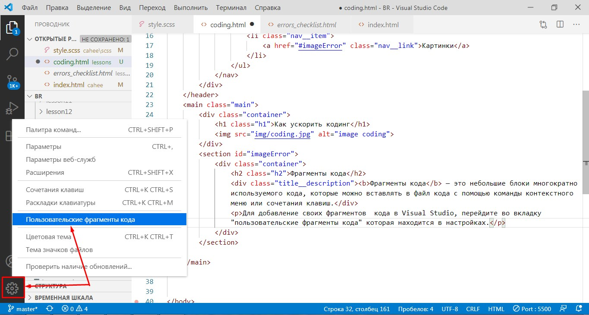
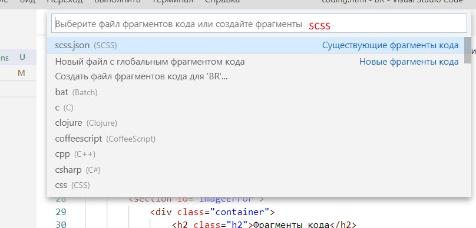

Как ускорить кодинг
Фрагменты кода
Фрагменты кода — это небольшие блоки многократно используемого
кода, которые можно вставлять в файл кода с помощью команды контекстного меню или сочетания клавиш.
Для добавление своих фрагментов кода в Visual Studio, перейдите во вкладку "пользовательские фрагменты кода" которая находится в настройках.
В появившемся окне выбираем язык кода, для которого будет создан фрагмент
Между фигурными скобками помещаем код снипета. Каждый снипет должен иметь уникальное название, префикс, тело и описание. Префикс используется для вызова этого снипета (фрагмента кода). В снипете можно использовать переменные $1, $2, переход по которым совершается табами.
Вот пример фрагмента кода (снипета)который ускоряет написание медиа запроса
"Media queries": {
"prefix": "@maxw",
"body": [
"@media(max-width: $1px){",
" $0",
"}"
],
"description": "Media queries description"
}
Теперь, при вводе в файле scss короткого @maxw мы быстро получаем шаблон медиа запроса